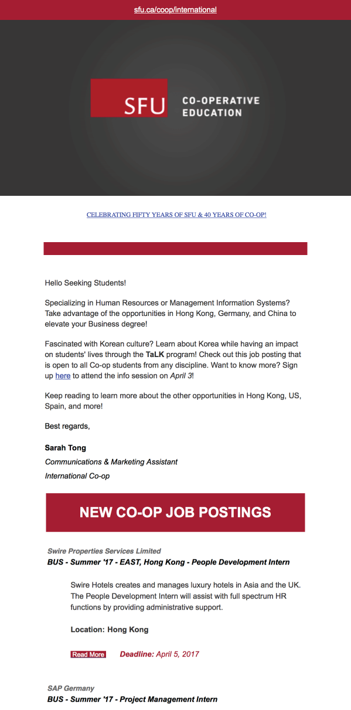
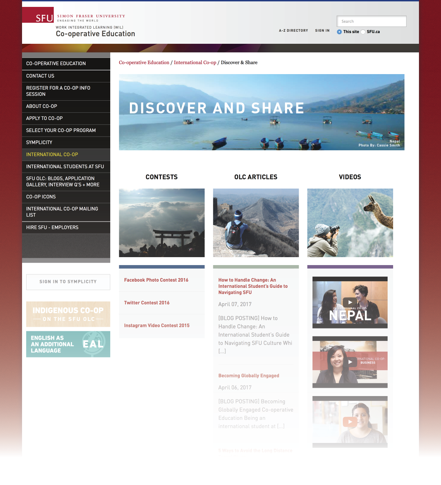
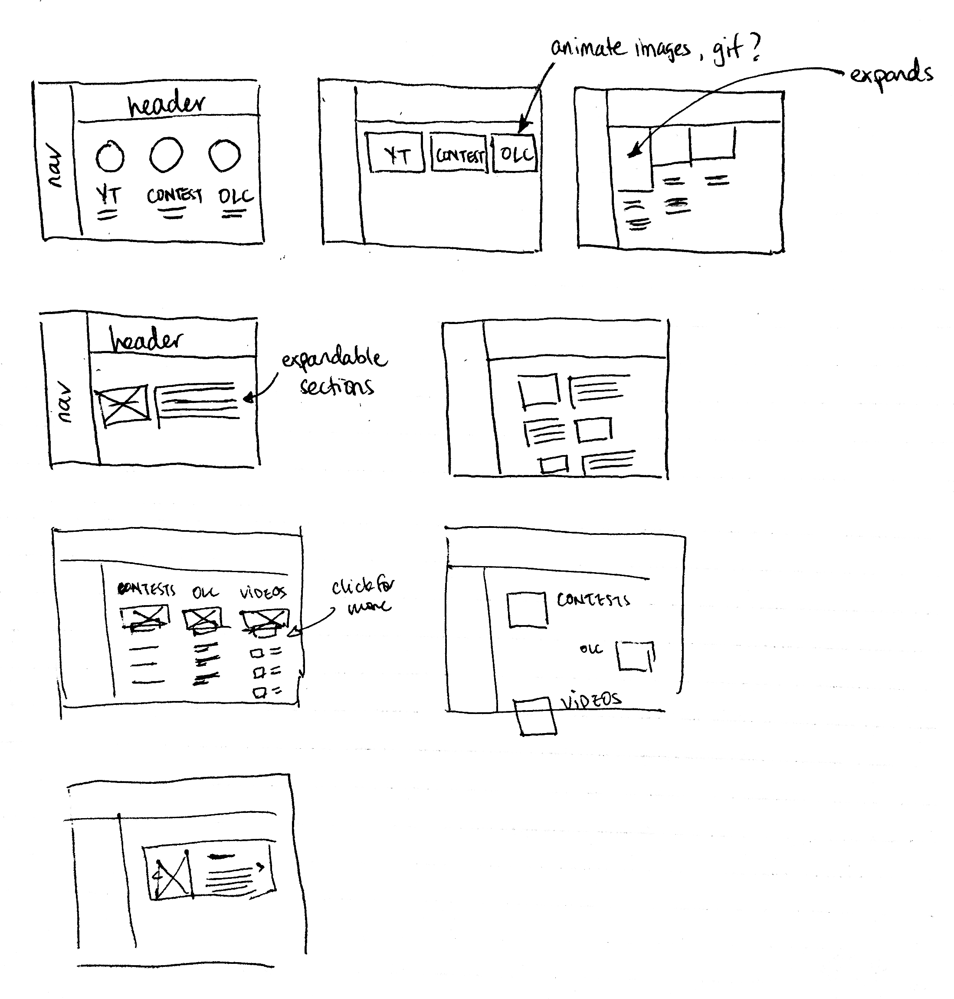
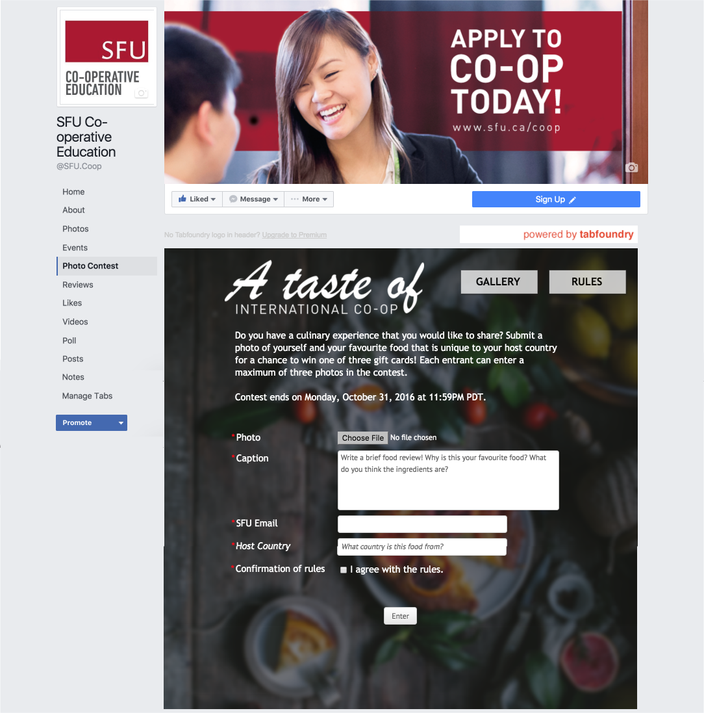

International Co-op
Overview
Simon Fraser University (SFU)’s Co-operative Education program (also known as Co-op) supports students in gaining paid work experience to augment their academic studies. I worked for the International Co-op department which provides students with the opportunity to undertake a Co-op outside of Canada.
As a Communications & Marketing Assistant, my role was to promote International Co-op and inspire students to work abroad.
Communication is Key
Email Blasts
An integral part of my role is frequent communication about International Co-op opportunities to encourage students to work abroad and increase placement numbers. Through managing and gathering mailing list signups from an online survey, as well as monitoring an online job board, I put together weekly email announcements to nearly 300 subscribed students and Co-op staff.
Info Sessions

Info sessions are another resource that provides students with in-depth information on specific internationally-focused internship programs. I promoted multiple info sessions throughout the semester via email marketing and social media, which included SFU Co-op’s Facebook, Twitter, and Instagram. Promotion generally involved researching about the subject of discussion; scheduling dates and location; creating graphics and written material; updating slide deck presentations; and creating and printing all necessary handouts. Occasionally, I have taken up roles as a speaker and videographer at some info sessions.
Bridging Online Learning

Communicating to prospective students is important, but communication to those already abroad was also key. I was tasked to improve the visual communication in an online curriculum, namely Bridging Online Learning (BIL), for students on International Co-op. On BIL, information was dense and the lack of hierarchy made it difficult to navigate through. This was confirmed by the multiple student emails seeking clarification and the end-of-work term deliverables that were incorrectly submitted. To address this, I created infographics and other visual elements, restructuring written content and refreshing web page aesthetics to improve readability. Emails have noticeably reduced, though by how much was at the time too soon to determine as my BIL project was completed toward the end of my work term.
Design made functional
 Web coding and design was one skill I wanted to improve upon and so I challenged myself to undertake a larger scale project to improve the user experience of the International Co-op website. Upon browsing it, I noticed contest pages, YouTube videos, and blog posts capturing students’ International Work stories were scattered throughout the website, making it difficult to find and access these important resources. My solution is to consolidate these resources to one access point. Following a few rough wireframe sketches and HTML/CSS coding within Adobe Experience Manager, “Discover & Share” took shape – a hub for students to discover stories about International Co-op or share experiences of their own through three mediums: contests, videos, and blogs (SFU’s OLC). This page is responsive and features device-specific animations as a tool to provide context in an interactive way while simplifying the information on the page.
Worth more than a thousand words
From editing old footage, conducting interviews and filming it, to recording info sessions, videography and video editing are skills that I have developed and grown the most. How I approached videos involved envisioning the final product, coordinating with interviewees to schedule a time, finding an optimal room for filming, and investing the time to learn how to use a video camera, audio recorder, and video editing software – namely Adobe After Effects and Premiere Pro. These videos covered such topics as motivation for working abroad, challenges during the work term, and insight on living in a foreign country.
A shared vision
As it is SFU’s vision to engage students, I was responsible for creating contests to engage with students who have been, or at the present time, working abroad. The first contest I created, called “A Taste of International Co-op”, was a photo contest to encourage students to share their favourite foods from their host country. Executing the promotion and managing the contest from beginning to end was the least challenging aspect. What was challenging was ideating a contest theme; arranging contest rules and regulations; planning how the winner will be chosen, what the prizes will be, and how long the contest will run; strategizing a social media action plan; and recording and measuring success. All these considerations were put into a written and verbal proposal to my supervisor. Although the number of submissions were less than ideal likely due to contest rules that created barriers to entry, I reflected and wrote about my learning experience to assist future Co-op students.
Reflection
I am grateful that this position has offered me a lot of creative direction and many opportunities to grow and reinforce relevant skills. From this role and the support of my supervisor, I was able to fulfill my learning objectives to learn videography, improve in video editing, organize and execute campaigns, build on my UX/UI skills, and even synthesize and analyze data.